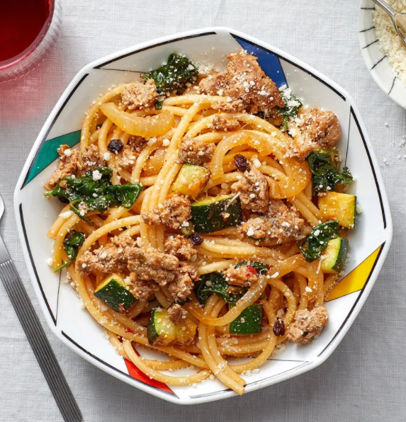
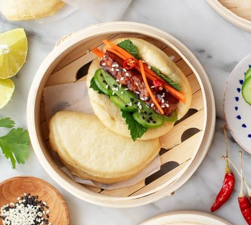

Welcome to Noah's Nibbles
Are you ready to cook some tasty meals, look no further!
Recipes
Spaghetti and Meatballs

Making your sauce is always better—it's cheaper and so much more flavorful. This one comes together in about 15 minutes and is the perfect accompaniment to the big garlicky meatballs.
Spiced Beef & Bucatini Pasta

To add exciting contrast of flavor to this comforting pasta, you’ll cook ground beef with plump, sweet currants and briny capers in a bright sauce flavored with the quatre épices spice blend.
Steamed Bao Buns

The bao buns themselves are soft and puffy. Stuffed with zesty marinated tempeh, avocado, and lots of fresh fixings, they become mini explosions of texture and flavor.